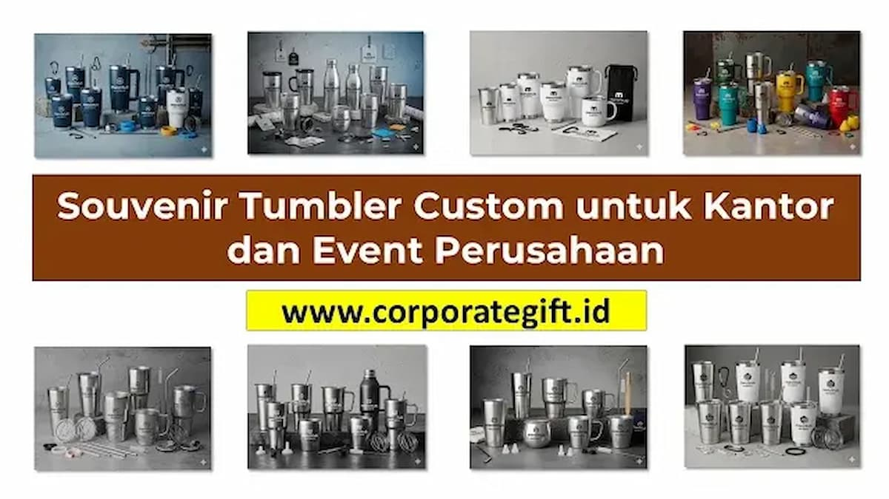

Corporate Gifts ID - Souvenir tumbler custom adalah pilihan corporate gift dan merchandise kantor yang paling banyak dipesan perusahaan untuk kebutuhan operasional harian, souvenir acara seminar, promosi brand activation, hingga hadiah apresiasi karyawan. Dengan konstruksi stainless steel food-grade berkapasitas 350 hingga 500 ml dan sentuhan grafir logo presisi, tumbler custom menggabungkan nilai estetika modern dengan fungsi utilitas nyata yang dipakai terus-menerus.
Di era kerja modern di mana kepedulian terhadap gaya hidup sehat dan keberlanjutan lingkungan (sustainability) semakin dijunjung tinggi, botol minum atau tumbler kustom menjadi medium branding paling relevan untuk menancapkan identitas korporat di hati audiens B2B maupun internal perusahaan.
Poin Kunci Memilih Tumbler Custom Korporat:
- Daya Retensi Suhu: Tumbler berbahan stainless steel SUS 304 dengan teknologi vacuum double-wall mampu menahan panas dan dingin selama 12 hingga 24 jam.
- Metode Cetak Awet: Teknik laser engraving menghasilkan logo permanen yang anti gores, sedangkan UV printing menghadirkan warna logo tajam sesuai warna korporat.
- Ukuran Paling Populer: Kapasitas 450 ml - 500 ml menjadi standar favorit karena pas di cup holder mobil dan nyaman dibawa di tas kerja.
- Dampak ESG Nyata: Penggunaan tumbler harian secara signifikan mengurangi timbulan limbah botol plastik sekali pakai di lingkungan kantor.
Manfaat Souvenir Tumbler Custom untuk Kantor dan Event Perusahaan
Mengapa tumbler custom terus merajai daftar pesanan souvenir perusahaan dari tahun ke tahun? Berikut beberapa keuntungan strategis yang diberikannya bagi organisasi bisnis:
1. Media Promosi & Branding Berkelanjutan (High Brand Recall)
Tidak seperti brosur atau flyer promosi yang sering berakhir di tempat sampah, tumbler custom digunakan berulang kali di atas meja kerja, saat rapat bersama klien, hingga sesi olahraga. Keberadaan logo yang terlihat setiap hari menciptakan pengingat visual (brand recall) yang sangat konsisten tanpa biaya iklan berulang.
2. Hadiah Apresiasi Karyawan dan Penguat Loyalitas Internal
Menyertakan tumbler premium berukir nama karyawan ke dalam paket onboarding welcome kit atau hadiah ulang tahun kerja memberikan sinyal kuat bahwa perusahaan peduli terhadap kenyamanan dan kesejahteraan anggota timnya.
3. Merchandise Eksklusif untuk Seminar, Workshop & Outbound
Membagikan tumbler custom sebagai bagian dari paket seminar kit menaikkan citra profesionalisme penyelenggara di mata peserta dan sponsor acara.
4. Mendukung Program Ramah Lingkungan (Inisiatif ESG Perusahaan)
Kampanye zero-waste dan prinsip tata kelola ESG (Environmental, Social, and Governance) terwujud nyata saat perusahaan mengajak seluruh karyawan dan mitra beralih ke wadah minum isi ulang guna memangkas jejak karbon korporasi.
Tabel Matriks Perbandingan Jenis Material Tumbler Custom & Metode Cetak
Agar tidak keliru saat menyusun spesifikasi pengadaan, perhatikan tabel komparasi karakteristik material dan teknologi cetak tumbler berikut:
| Jenis Material Tumbler | Karakteristik & Ketahanan Suhu | Kapasitas Populer | Metode Cetak Logo Terbaik | Kelebihan Utama | Rekomendasi Event / Penggunaan |
|---|---|---|---|---|---|
| Stainless Steel SUS 304 | Double-wall vacuum insulated, tahan panas/dingin 12-24 jam | 500 ml | Grafir Laser (Laser Engraving) | Kesan sangat mewah, anti karat, logo tidak akan luntur | Corporate gift set VIP, merchandise direksi & klien |
| Smart LED Suhu Stainless | Insulasi vacuum dengan sensor display suhu digital di tutup botol | 500 ml | Grafir Laser & UV Printing | Futuristik, informatif, daya tarik teknologi tinggi | Seminar teknologi, industri finansial, startup B2B |
| Bambu & Stainless (Eco Tumbler) | Bodi luar kayu bambu natural, bagian dalam SUS 304 tahan 8-12 jam | 450 ml | Laser Engraving Etsa Kayu | Nuansa alam ramah lingkungan, tekstur etnik unik | Kampanye ESG, event bertema sustainability, hadiah eksekutif |
| Kaca Borosilikat + Silikon | Kaca tahan panas kejut suhu dengan pelindung karet silikon | 400 ml | Sablon Warna & UV Flatbed | Higienis, rasa minuman murni tidak berubah, estetik | Wellness kit, industri farmasi, klinik kecantikan |
| Plastik Tritan (BPA Free) | Bahan plastik copolyester ringan, tahan banting, minuman dingin | 600 ml - 750 ml | Sablon Presisi & Digital UV | Ringan, kapasitas besar, transparan, harga terjangkau | Event olahraga kantor, gathering outbound, promosi massal |

Teknik cetak grafir laser dan print UV pada aneka material tumbler custom stainless steel dan botol minum kantor.
Tips Memilih Souvenir Tumbler Custom yang Tepat & Tahan Lama
Agar investasi anggaran pengadaan souvenir memberikan hasil yang maksimal, pertimbangkan faktor-faktor penting berikut:
1. Pastikan Material Food Grade & Bebas BPA
Keamanan pengguna adalah prioritas mutlak. Selalu pilih tumbler yang mengantongi sertifikasi food grade dan 100% bebas dari BPA/BPS berbahaya. Logam stainless SUS 304 atau SUS 316 memastikan tidak ada bau logam atau residu kimia yang larut ke dalam air minum.
2. Tentukan Kapasitas Ideal Penggunaan Harian (350ml - 500ml)
Ukuran 500 ml adalah titik keseimbangan sempurna antara portabilitas dan kapasitas air minum. Ukuran ini tidak terlalu berat untuk dibawa bepergian, pas di kantong samping ransel laptop, dan tidak memakan banyak tempat di meja kerja.
3. Pilih Teknik Cetak Logo Tahan Gores (Grafir vs UV)
Gunakan teknik grafir laser jika Anda mengutamakan ketahanan abadi tanpa risiko luntur. Jika brand guideline perusahaan mewajibkan penampilan warna identitas visual tertentu (misalnya kombinasi merah dan biru terang), pilih teknologi UV printing resolusi tinggi dengan lapisan vernis pelindung anti gores.
Contoh Penerapan Souvenir Tumbler Custom pada Berbagai Acara Korporat
Fleksibilitas tumbler custom menjadikannya pilihan universal untuk aneka ragam agenda perusahaan:
- Konferensi & Seminar Nasional: Peserta seminar langsung menggunakan tumbler di stasiun water dispenser venue acara, mengurangi konsumsi botol plastik sekali pakai selama event.
- Corporate Outbound & Family Gathering: Tumbler sport warna-warni yang dicetak nama divisi memperkuat semangat kebersamaan dan kerja tim.
- Peluncuran Produk & Media Gathering: Menghadirkan tumbler smart display suhu dengan kemasan kustom eksklusif untuk menciptakan word-of-mouth positif dari awak media dan influencer.
- Program HR Welcome Kit: Menyambut karyawan baru dengan set tumbler premium sebagai simbol budaya perusahaan yang profesional dan modern.
Ide Packaging dan Kustomisasi Hadiah Tumbler Perusahaan
Sentuhan akhir pada kemasan menentukan kesan pertama saat cinderamata diterima:
- Rigid Hardbox Custom Berbusa Presisi: Kemasan kotak keras dengan dudukan busa (die-cut foam) yang pas memegang tumbler, memberikan pengalaman unboxing yang sangat mewah bagi penerima VIP.
- Pouch Kain Serut Beludru / Kanvas: Kemasan fungsional yang dapat dipakai kembali untuk melindungi botol dari benturan saat dimasukkan ke tas.
- Bundling Paket Gift Set Terpadu: Menggabungkan tumbler dengan pulpen metal grafir, notebook agenda kulit deboss, dan flashdisk custom menjadi paket cinderamata eksekutif yang bernilai tinggi.
Pertanyaan Seputar Souvenir Tumbler Custom (FAQ)
Kesimpulan dan Konsultasi Souvenir Tumbler Custom
Souvenir tumbler custom merupakan investasi promosi dan retensi yang terbukti menghasilkan nilai guna tinggi serta impresi positif jangka panjang. Dengan memilih material stainless steel food-grade berkualitas, metode cetak logo presisi, dan kemasan yang elegan, perusahaan Anda dapat menghadirkan cinderamata yang membanggakan bagi seluruh karyawan maupun mitra bisnis.
Jelajahi koleksi lengkap katalog souvenir kantor dan diskusikan proyek kustomisasi botol minum perusahaan Anda bersama tim konsultan di Corporate Gifts ID untuk memperoleh penawaran harga B2B terbaik serta sampel mockup digital gratis.